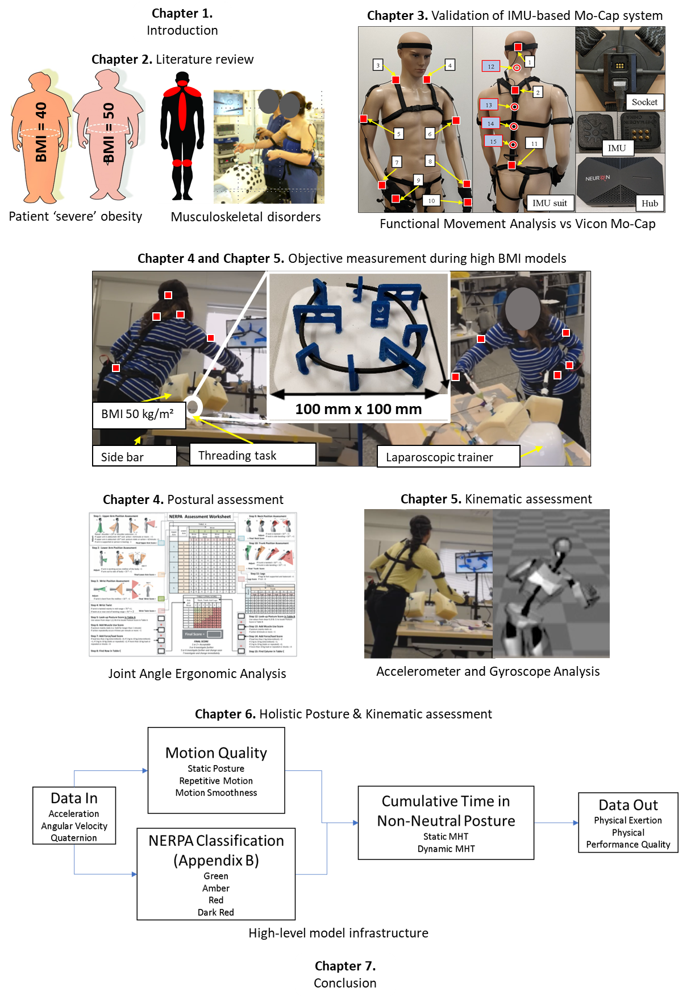

Thesis Title:
Objective assessment of the impact of patient Body Mass Index on the postural kinematics of surgeons in training
Introduction:
Laparoscopic Surgery (LS) has become an integral part of modern clinical care, due to the vast benefits the surgical technique offers for the patient, healthcare system and surgeons compared to open surgery. In many clinical specialities the gold standard interventional procedure has shifted from open to laparoscopic due these benefits. The major beneficiary of the transition in surgical technique is the patient, as LS generally facilitates shorter hospital stays, a quicker return to work and reduced trauma and scarring. However, an ever-increasing volume of literature reports a plethora of musculoskeletal disorders (MSDs) or musculoskeletal-related complaints amongst surgeons performing LS. Musculoskeletal disorders have a multifactorial aetiology, especially amongst laparoscopists, with many studies reporting the inherent postural and kinematic requirements of performing LS as major contributors of MSDs. In addition, further investigations suggest that external factors to the surgeon, such as ergonomic design, patient pathology, and high BMI patients are negative impactors on surgeon physical wellbeing. Anecdotally, high BMI patients are reported to have a substantial degrading impact on the ability of a surgeon to perform optimally, however few objective analyses had investigated this issue.
Aims:
(i) Identify and validate a method of measurement capable of objectively quantifying surgeon postural and kinematics
(ii) Investigate the postural kinematics of laparoscopic surgeons when performing laparoscopic surgery on patients with obesity and severe obesity
(iii) Develop a model to quantitatively and holistically assess the postural kinematics of laparoscopic surgeons predicated on objective data.
Thesis Structure:

This research has provided novel contributions within measurement science, applied ergonomics, and surgical education fields of research, culminating in knowledge concerned with obesity surgery and the impact of LS on the surgeon. Musculoskeletal discomfort is a well-recognised problem amongst laparoscopists and patients with obesity is a factor attributed to the discomfort associated with LS. The research within this thesis was able to objectively quantify and measure the impact of patients with obesity and severe obesity on the posture and kinematics of surgeons. In addition, a performance risk model was developed, to objectively quantify physical performance and to provide a more holistic assessment of surgeons compared to existing methods.
These aformentioned investigations have presented clear objective evidence that implicates surgeons of all experience levels in a profound manner. Given the scale of the obesity problem in modern society and the bleak projections of the future prevalence, surgeons could be facing an unprecedented number of severely obese laparoscopic procedures in the near future. While the scale of these investigations were relatively small, these novel results highlight the urgent need for further, more comprehensive research in this area. The development of the physical performance risk model provides a method of assessment more pertinent for surgeons performing LS. The model facilitates a more holistic assessment of surgeons and is more suitable for the application of LS, given the further insight available by including the additional input variables.